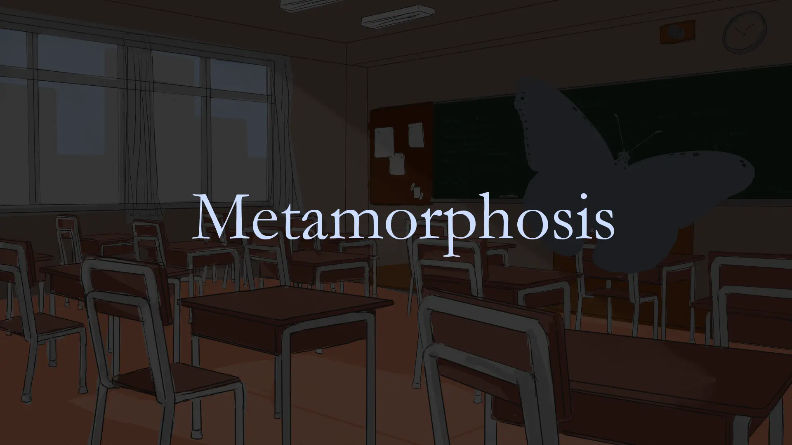
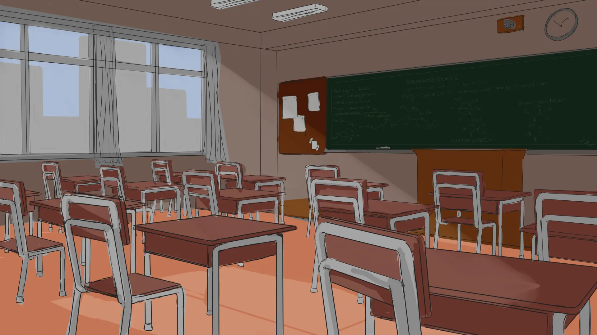
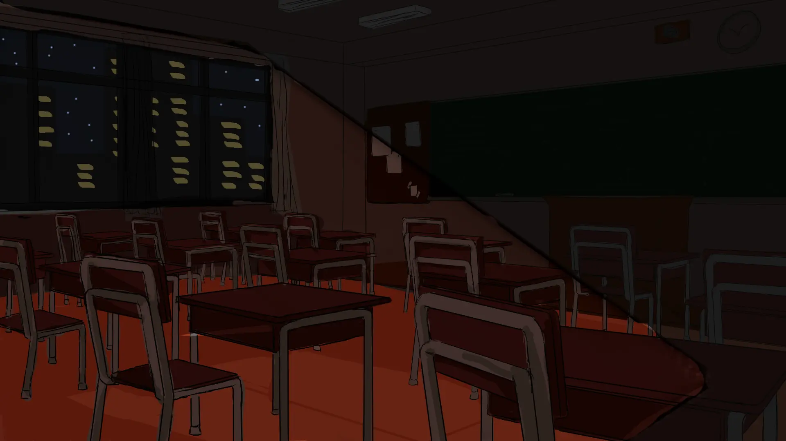
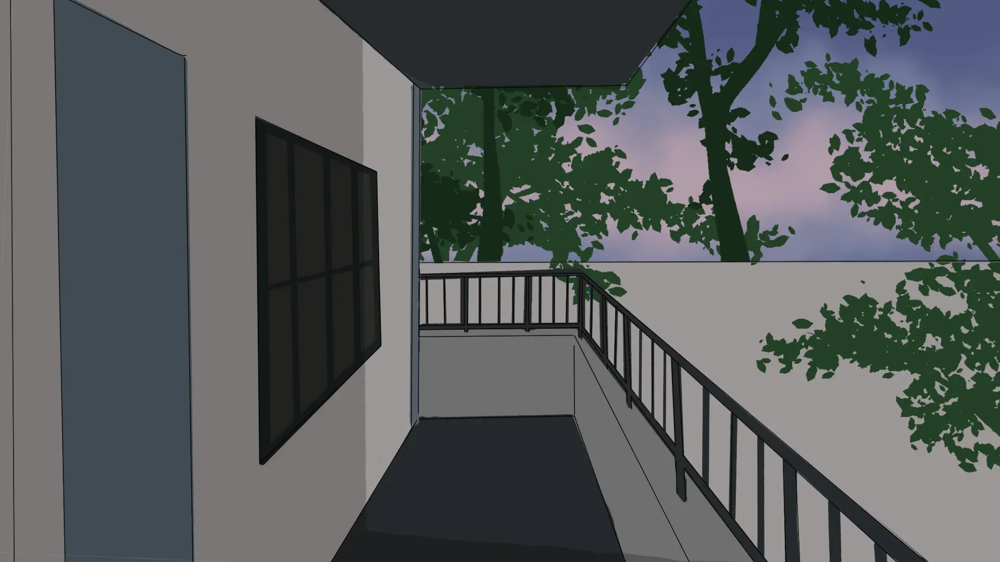
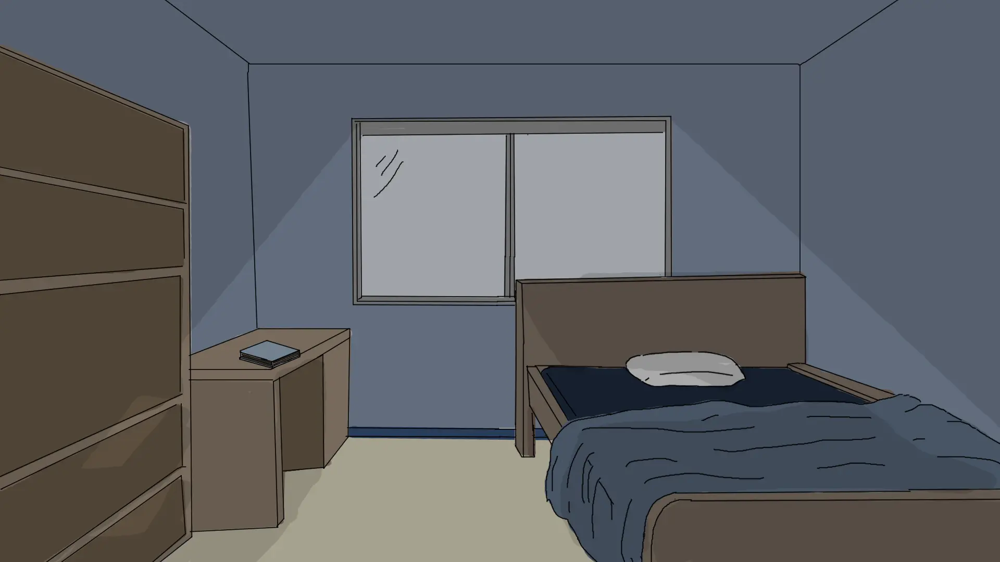
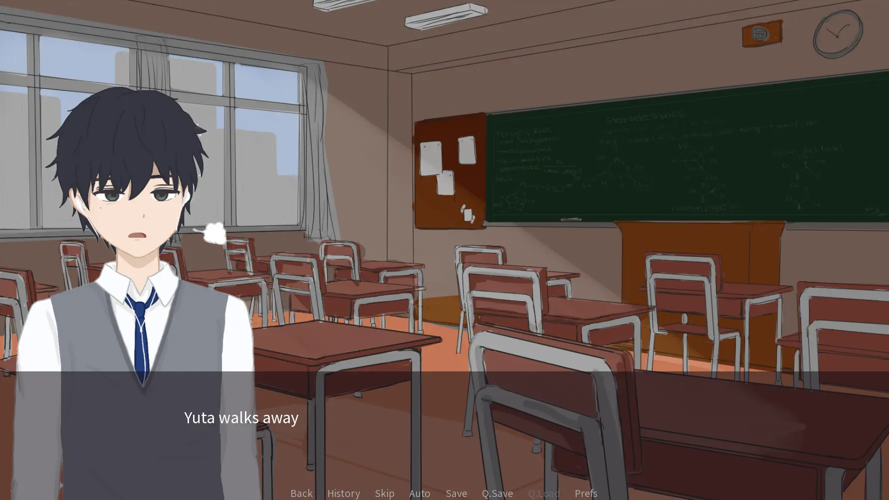
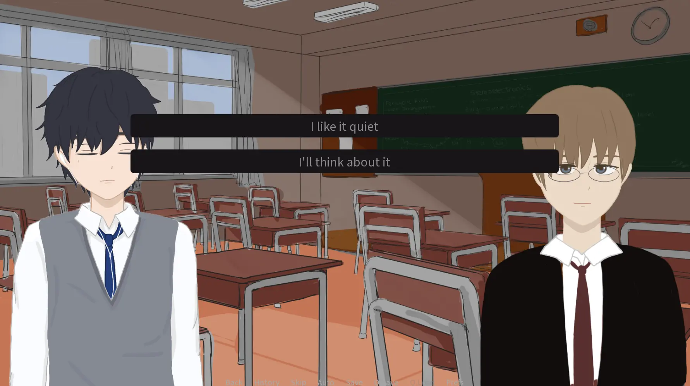
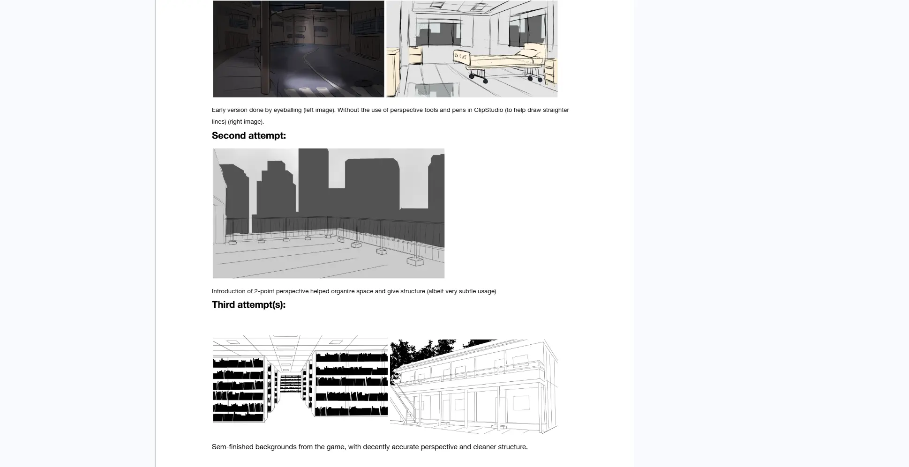
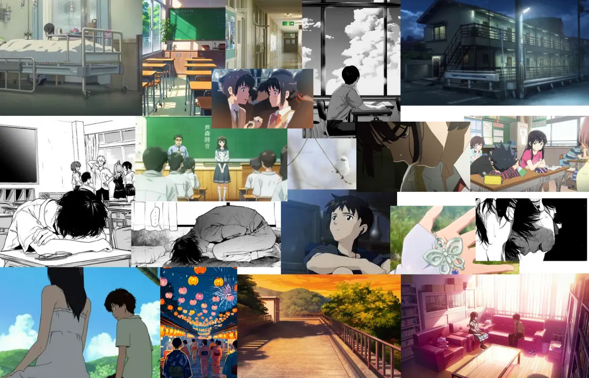
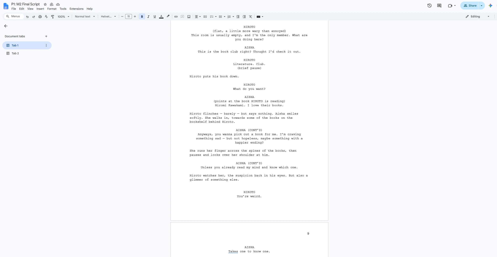

Metamorphosis
A visual novel following the unlikely friendship between a withdrawn high school boy and an optimistic girl — and how each quietly changes the other. I co-wrote and co-directed the project, and created all background art.

Story, Art, and the Space Between
Metamorphosis is a visual novel I co-wrote and co-directed for IAT 313: Narrative and New Media. The project followed the relationship between Hiroto, a withdrawn high school student, and Aisha, an optimistic transfer student who seems to understand him in a way no one else does. The story explored connection, emotional silence, grief, and how people can quietly change each other. My main challenge was learning how to turn an emotional idea into a structured narrative while also creating background art that supported the tone of each scene.
My role combined writing, project direction, and background illustration. As a co-writer, I helped develop the characters, premise, beat sheet, and emotional progression of the story. As a project manager, I helped keep the group organized and focused on what needed to be completed. As the background artist, I created the environments that the story would take place in, which meant thinking about how each space could communicate mood before the dialogue even appeared on screen.
This project taught me that narrative design is not only about writing emotional scenes. It is about structure, pacing, visual tone, and knowing how each part of the experience supports the player's understanding of the story.
At the beginning of the project, I was not the strongest long-form writer. I could write individual emotional moments, but I struggled with structure when the story needed to continue across multiple scenes. Through the course, I learned to use more technical writing strategies such as character archetypes, clear story beats, internal and external conflict, and emotional rhythm. Instead of only asking whether a scene felt sad or meaningful, I started asking what purpose the scene served in the larger arc.
One of the biggest writing challenges was making the relationship between the two main characters feel earned rather than sudden. Early versions of the story had interesting ideas, but some moments moved too quickly or lacked enough buildup. To address this, we used a beat sheet to organize the story into clearer stages: setup, catalyst, debate, emotional highs, conflict, reflection, and resolution. This helped us understand where the story needed quieter scenes of connection and where it needed stronger turning points.
Feedback also helped us recognize where the story needed more depth. For example, classmates responded positively to the dynamic between Hiroto and Aisha, but also pointed out that the story needed stronger structure, clearer foreshadowing, and a more active role for the protagonist near the climax. That feedback pushed me to think less like someone simply writing scenes and more like a narrative designer: every character detail, symbol, and story beat needed to contribute to the overall emotional arc.
Alongside the writing, I also used this project to improve my background art. At the start, I had much more experience drawing characters than environments. My early backgrounds were mostly drawn by eye, which made them feel flat or awkward. To improve, I studied one-point and two-point perspective, practiced using horizon lines and vanishing points, and used Clip Studio Paint's perspective tools to keep spaces more consistent. I also looked at visual novel backgrounds and real-world building references to better understand how artists structure rooms, hallways, and outdoor scenes.
Because of the project timeline, I did not focus heavily on detailed rendering, lighting, or painting techniques. Instead, I prioritized clean perspective, readable layouts, and backgrounds that would not compete with the character sprites or dialogue box. This made the art more practical for a visual novel format. Each background had to work as both an illustration and a stage for the story, so I learned to think about environment art as part of the player's reading experience.
The final project was successful because it helped me grow in two areas at once: narrative structure and environmental visual design. I learned that emotional storytelling depends on more than strong dialogue; it also depends on pacing, character development, visual context, and iteration. If I continued the project, I would spend more time refining the script before finalizing the art, and I would push the backgrounds further with lighting, atmosphere, and colour. Even so, this project gave me a stronger understanding of how writing and visual design can work together to create a more complete interactive story.
Project Artifacts
Background Art




In-Game Screenshots


Art Process & Early Sketches


Writing Sample
